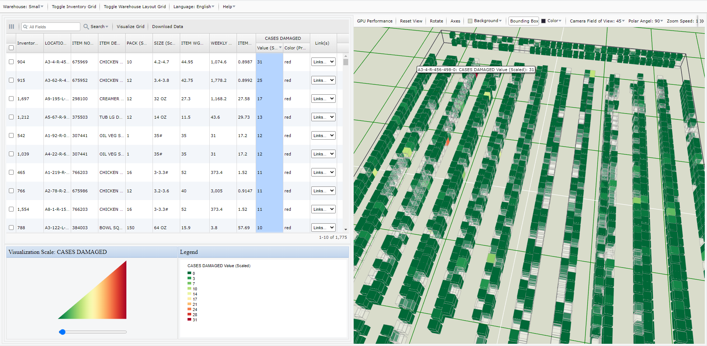

<!DOCTYPE html>
<div>
 <br />  <br /> 

<!-- <center>
<table border="1">
    <thead>
        <tr>
            <th colspan="2"><i>My Warehouse Visualizer</i> Quick Start</th>
        </tr>
    </thead>
    <tbody>
        <tr>
            <td>Step 1:</td>
            <td>Use one of the warehouses (Small, Medium, Large) from the drop-down.
			<br />  <br />
			Alternatively, 'Upload...' or 'CSV URLs' reference a warehouse layout and inventory into the application. 
        </tr>
		<tr>
			<td>Step 2:</td>
			<td>Visualize and Analyze:<br />  <br /> <center></img></center>  </td>
		</tr>
    </tbody>
</table>
</center>
</span> -->
<!-- </div> -->

</div>		